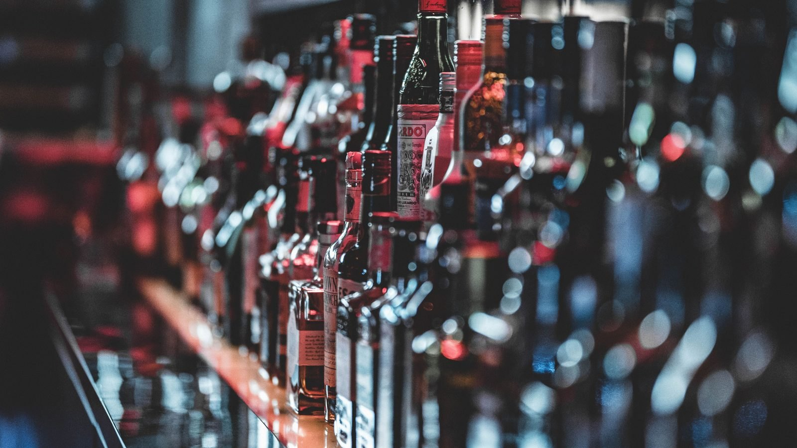

Brasil · Trabalho
Brasil · TrabalhoCongresso vota nesta semana o fim da escala 6x1 e o fim da taxa das blusinhas
O que mais está em jogo no Congresso e que mexe no bolso de quem trabalha e de quem compra.
A previsão está no Orçamento de 2027 que o governo mandou ao Congresso nesta segunda. O Imposto Seletivo começa a ser cobrado no ano que vem, mas a regra de funcionamento ainda precisa ser aprovada pelos parlamentares.
Em 30 segundos · Modo de Leitura, formato original Santa Informa
O Imposto Seletivo, apelidado de imposto do pecado, deve arrecadar R$ 41,9 bilhões em 2027.
A previsão está no Orçamento de 2027, enviado ao Congresso nesta segunda-feira, 31.
Ele foi criado pela reforma tributária e mira produto ruim para a saúde ou para o meio ambiente.
Na lista: cigarro, bebida alcoólica, refrigerante e outras bebidas açucaradas.
Também alguns veículos, conforme a emissão de poluentes, e a extração de minério.
E ainda loteria, aposta, bets e fantasy sports.
A cobrança começa em 2027, mas a regulamentação ainda precisa passar pelo Congresso.
No começo, a ideia é manter a carga atual dos setores que já pagam IPI.
Depois as alíquotas podem subir, para desestimular o consumo.
A CBS, o outro tributo novo, deve render R$ 636 bilhões, somando R$ 677,9 bilhões com o Seletivo.
EconomiaPublicada em Redação Santa Informa

O tributo que o pessoal chama de imposto do pecado ganhou número. O governo estima arrecadar R$ 41,9 bilhões com o Imposto Seletivo em 2027, previsão que entrou no Projeto de Lei Orçamentária Anual enviado ao Congresso nesta segunda-feira, 31 de agosto.
O Imposto Seletivo nasceu na reforma tributária e vale para produto ou atividade considerada prejudicial à saúde ou ao meio ambiente. A lista prevista tem cigarro e outros produtos de tabaco, bebida alcoólica, refrigerante e outras bebidas açucaradas, veículos conforme a característica e o nível de emissão de poluentes, extração de bens minerais, loteria e aposta, incluindo as bets e o fantasy sports.
A cobrança está marcada para 2027, e é aí que mora a parte ainda aberta: a regulamentação do imposto precisa ser aprovada pelo Congresso, e o governo ainda não mandou a proposta que define como o tributo vai funcionar na prática. Segundo o Ministério da Fazenda, a estratégia inicial é preservar, durante a transição, uma carga parecida com a que já existe. Depois, as alíquotas podem subir pelo chamado efeito regulatório, para desestimular o consumo.
O ministro da Fazenda, Dario Durigan, disse em entrevista que a estimativa busca manter a carga atual dos setores já tributados pelo IPI. No caso das apostas, a novidade é maior, porque as bets não pagam esse imposto hoje, e a ideia é achar um valor que não seja irrelevante nem tão alto que empurre plataforma para a ilegalidade. O governo também usa o argumento do custo: segundo o Ministério da Saúde, o consumo de álcool gerou R$ 18,8 bilhões em custos em 2019, o tabagismo custa R$ 153,5 bilhões por ano, e o refrigerante e outras bebidas ultraprocessadas custam cerca de R$ 3 bilhões ao SUS. Do outro lado, produtores dos setores atingidos alegam que a carga já é alta no Brasil, e apontam risco de repasse ao preço, de demissão e de crescimento do mercado ilegal.
No litoral, cerveja e refrigerante são o dia a dia de bar, quiosque, mercado e restaurante, e é na temporada que o volume aparece. Se a carga sobe depois da transição, a conta chega no cardápio de verão. Vale o mesmo para a loja que vende veículo e para quem trabalha com aposta esportiva. Por enquanto o que existe é uma previsão de arrecadação, não a alíquota final, e é a alíquota que decide se o preço mexe.
O resumo de 30 segundos está no topo e a versão completa é o texto acima. Aqui ficam as três leituras da casa sobre o mesmo assunto.
Clara, a otimista
Ter o número no Orçamento ajuda a discutir o assunto com dado em vez de achismo. Dá para comparar quanto o país arrecada e quanto gasta tratando as doenças que esses produtos causam.
E a regra de manter a carga atual na largada evita susto no primeiro ano. Quem vende ganha tempo para se organizar antes de qualquer aumento.
Seu Prudêncio, o criterioso
Merece atenção o fato de a previsão de arrecadação chegar antes da regra. O Orçamento já traz R$ 41,9 bilhões, e a lei que diz como cobrar ainda não foi escrita, o que deixa comerciante e indústria planejando 2027 sem saber a alíquota.
Vale acompanhar o caso das apostas, que hoje não pagam IPI e entram do zero. É o item de maior incerteza da lista, e o próprio governo admite que precisa achar um ponto entre cobrar de menos e empurrar plataforma para a ilegalidade. Uma sugestão útil para bar e mercado do litoral: não repassar preço com base em notícia de previsão, e esperar a alíquota publicada.
E é justo reconhecer a coerência da proposta. Tributo que cobra mais de quem gera custo ao sistema de saúde tem lógica defensável, e ter a série de custos do álcool e do tabaco na mesa qualifica o debate.
Caco, o sarcástico
Imposto do pecado. O nome já entrega que ninguém vai pagar reclamando de consciência limpa.
A lista tem cigarro, bebida, refrigerante e aposta. Basicamente o roteiro completo de uma sexta-feira.
O governo diz que a alíquota pode subir depois para desestimular o consumo. Sempre funcionou muito bem, como todo mundo sabe.
Fontes: Agência Brasil, reportagem de Wellton Máximo publicada em 31 de agosto de 2026, às 20h50, sobre a previsão de arrecadação do Imposto Seletivo no Projeto de Lei Orçamentária Anual de 2027, de onde saem os R$ 41,9 bilhões, a lista de produtos e atividades tributados, o início da cobrança em 2027, a transição até 2033, os R$ 636 bilhões previstos para a CBS, as declarações do ministro da Fazenda Dario Durigan, os custos de álcool, tabagismo e bebidas ultraprocessadas informados pelo Ministério da Saúde e as críticas dos setores atingidos. A foto do topo é imagem ilustrativa de banco gratuito e não registra o fato noticiado.
Brasil · TrabalhoO que mais está em jogo no Congresso e que mexe no bolso de quem trabalha e de quem compra.
 Brasil · Economia
Brasil · EconomiaComo andam os preços agora, antes de o novo imposto começar a valer.
 Brasil · Energia
Brasil · EnergiaOutro tributo e outra cobrança que aparecem na conta do mês sem pedir licença.